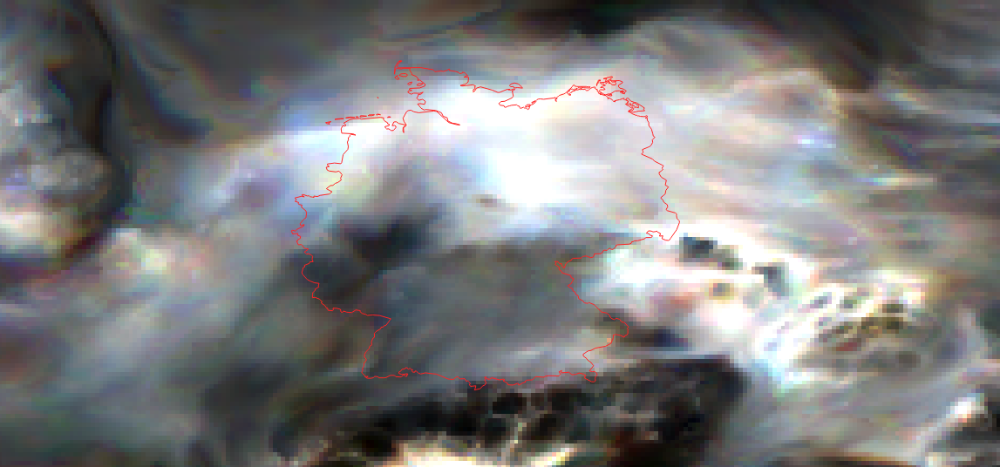

PM10 Land Cover, Temporal Variation, and Population Exposure – Germany
Overview
This section presents an integrated analysis of PM₁₀ (particulate matter with aerodynamic diameter ≤10μm) in Germany, focusing on three main dimensions: land cover characteristics, annual variation in PM₁₀ levels, and exposure risk for the population based on spatial distribution in 2020. The analysis combines geospatial data and environmental indicators to provide insights into air quality and the potential health impacts of atmospheric particulate pollution.
Land Cover Classification – Germany
The land cover classification reveals a clear dominance of agricultural areas (yellow), occupying large portions of Germany, particularly in the central, northern, and eastern regions. Forested areas (green) are widely distributed and notably concentrated in the mountainous southern regions, such as the Bavarian Alps, the Black Forest (Schwarzwald) in the southwest, and the hilly areas of Thuringia. Grasslands (light green) are primarily found in transitional zones between agricultural and forested lands. Urban and peri-urban settlements (fuchsia) are densely clustered around major metropolitan areas including Berlin, Munich, Hamburg, Frankfurt, and the Ruhr region, indicating high levels of human activity. Wetlands (blue) are sparsely distributed, with some presence in northern plains and river valleys. Residual categories (red) represent other land uses such as artificial surfaces or industrial zones.
Overall, Germany presents a landscape mosaic characterized by a strong agricultural and forested structure, reflecting a balance between food production, natural vegetation cover, and urban development. This territorial configuration has significant implications for environmental policies, air quality management, and spatial planning.
Concentration Classifications
PM₁₀ levels are classified based on their compliance with EU and WHO air quality standards. These classifications are essential to assess population exposure and environmental risk.
| Class | EU Limit (μg/m³) | WHO Guideline (μg/m³) | Health Risk |
|---|---|---|---|
| 1 | ≤ 15 | ≤ 15 | Good – meets WHO guideline |
| 2 | 15 – 30 | 15 – 20 | Moderate – above WHO guideline |
| 3 | 30 – 40 | 20 – 30 | Unhealthy for sensitive groups |
| 4 | 40 – 50 | 30 – 50 | Unhealthy – nearing EU limit |
| 5 | > 50 | > 50 | Very unhealthy – exceeds limits |
Average and Maximum PM10 Exposure (2013-2022)
Trends in PM10 Exposure
The graph above shows the average and maximum levels of PM10 exposure between 2013 and 2022. The average PM10 exposure (blue line) demonstrates a gradual decrease over the years, indicating a general improvement in air quality. Despite this, the average level remains consistently above 15 µg/m³ up until 2022.
The maximum exposure levels (orange line) fluctuate more significantly, with occasional peaks above 20 µg/m³. This variability suggests occasional episodes of high pollution, despite the overall downward trend in average concentrations. These peak values are a reminder that acute air quality issues still occur from time to time.
Understanding the trends in both average and maximum exposure helps in identifying periods and areas where air quality management efforts need to be more focused.
Population Exposure to PM10 Levels
Distribution of Exposure Levels
The pie chart illustrates the distribution of the population exposed to different levels of PM10 concentrations. A significant portion of the population (96.6%, marked in blue) is exposed to relatively low levels of PM10, suggesting that most people live in areas with air quality that meets or is close to health standards.
However, 3.4% of the population (represented in orange) experiences higher PM10 levels, which may pose health risks, particularly in certain urban or industrial regions. This indicates that while the majority of the population is exposed to safe air quality, there are critical areas where air pollution exceeds recommended levels, requiring targeted interventions.
This data is essential for policymakers and public health authorities to identify vulnerable areas and populations that may need additional support and regulation.
Annual PM10 Difference: 2022 vs 2017–2021 Average
Key Observations
- Most areas in Germany experienced stable or declining PM₁₀ levels in 2022, reflecting the continued effectiveness of air quality regulations and emission reduction measures implemented over the past decade.
- Significant reductions were recorded in parts of the northeast and central-east regions, likely linked to decreased industrial emissions and improvements in transportation policies.
- Some localized increases appeared in southern and western regions, potentially attributable to specific meteorological conditions such as temperature inversions or increased particulate resuspension, as well as localized industrial activities or construction works.
This spatial and temporal comparison is crucial for monitoring long-term air quality trends, assessing the impact of environmental policies, and identifying regions where further mitigation efforts are necessary. It also underscores the importance of considering local factors and meteorological variability when interpreting air pollution data.
Population Exposure to PM10 (2020)
Bivariate Analysis
This bivariate map illustrates the spatial relationship between PM₁₀ concentrations and population density across Germany in 2020. Darker regions highlight areas where high pollution levels coincide with dense population, often corresponding to major industrial hubs and urban centers such as the Ruhr area, Berlin, and some cities in eastern Germany.
Such areas are critical from a public health perspective because increased exposure to fine particulate matter is linked to respiratory and cardiovascular diseases, as well as premature mortality. The map thus serves as a valuable tool for policymakers to prioritize environmental interventions, optimize resource allocation, and develop targeted strategies to protect vulnerable populations.
Conversely, rural and less densely populated regions generally exhibit lower PM₁₀ concentrations and reduced exposure risks, though ongoing monitoring remains essential to capture episodic pollution events that may impact these areas.